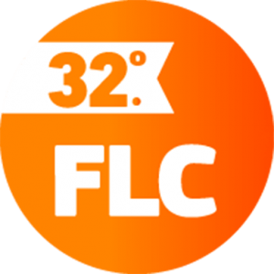

Una app más?
Con motivo de la Feria del Libro Córdoba 2016 nos propusimos en la Municipalidad de Córdoba* desarrollar una aplicación móvil para que la agenda de actividades esté disponible al público.
Este desarrollo se termino convirtiendo en la excusa perfecta para varios lineamientos que impulsamos desde nuestro trabajo diario.
 Dejar la aplicación disponible como software libre
Dejar la aplicación disponible como software libre
Queremos fomentar la colaboración entre Gobiernos para atacar las necesidades que tenemos en común. Lo primero que notamos al hacer esta aplicación es que muchos otros gobiernos (y por que no otro tipo de organizaciones) seguramente van a necesitar este tipo de productos. Lamentablemente no es común que los gobiernos abran sus desarrollos tecnológicos. Cualquiera que haya asistido a eventos donde los gobiernos presentan al público productos modernos e innovadores lo notarán. Todos los gobiernos estamos haciendo los mismos desarrollos, cada uno por su parte. Queremos empezar a cambiar este paradigma.
Ordenar los datos de gestión interna
Esta aplicación no podía ser de diseño estático. Las 300 actividades que forman esta Feria del Libro pueden sufrir modificaciones durante su curso. Es por esto que decidimos colocar su contenido en una base de datos externa. De esta forma los cambios que aparezcan serán actualizados en un sistema externo y automáticamente se reflejarán en los dispositivos móviles de los asistentes al evento.
La actividad cultural en Córdoba es muy importante y excede a esta Feria del Libro. Hacer que la Secretaría de Cultura cargue la agenda completa de eventos y note los beneficios de tener una app conectada online a estos datos nos permite continuar del mismo modo a futuro. En adelante entonces toda la actividad Cultural de la Municipalidad podrá estar disponible para una aplicación cultural del Municipio. Esto es win-win con mi trabajo, voy a disponer de todos los datos de la actividad cultural sin tener que pedirlos, limpiarlos y analizarlos. Una clave importante para mi trabajo es brindar herramientas que simplifiquen procesos a personas que trabajan a diario con datos de gestión. El desarrollo de visualizaciones y estadísticas se simplifica enormemente cuando la fuente de datos usada es alimentada a diario por terceros.
Ecosistema de emprendimientos tecnológicos de la ciudad
Los datos que consume esta aplicación están abiertos en formato reutilizable. Eso es importante porque no sólo el Municipio gana cuando esta actividad se difunde, existen emprendimientos dedicados a difundir la movida cultural de nuestra ciudad. Hemos contactado a algunos de ellos y han visto de muy buena gana la posibilidad de consumir estos datos en vivo, no van a volver a necesitar recibir las gacetillas y transcribirlas a sus sistemas. En el mismo momento que publiquemos un evento las aplicaciones de terceros lo tendrán publicados en sus portales o aplicaciones.
Articular aplicaciones de uso conjunto entre diferentes oficinas municipales
Otro detalle que pensamos es que una agenda de eventos públicos es algo necesario para muchas áreas además de la oficina de cultura. Después de esta oficina podrán sumarse la Dirección de Juventud con la agenda para este público. Deportes, turismo, tercera edad, etc; todos los que tengan agendas las van a poder cargar en nuestra base de datos centralizada y ver estos datos en diferentes apps municipales (y por supuesto de terceros).
Links
Esta aplicación está disponible en el market de Android pero también en versión web.
Web: https://modernizacionmunicba.github.io/feria-del-libro Google Play (Android): https://play.google.com/store/apps/details?id=ar.gob.cordoba.gobiernoabierto.feriadellibro Código fuente libre: https://github.com/ModernizacionMuniCBA/feria-del-libro Datos abiertos vía API: https://gobiernoabierto.cordoba.gob.ar/api/actividad-publica/
En resumen, ésta no es una app más, hay un grupo de ideas detrás que nos vincula al software libre, datos abiertos en formatos reutilizables y a fomentar al ecosistema tecnológico que nos acerca a la ciudadanía. No se termina este desarrollo después de la Feria, empieza con la Feria.
* Como trabajo en equipo entre la Secretaría de Modernización y la Secretaría de Cultura.
Actualización 2017
Esta nueva edición de la Feria del Libro 2017 también se permite que desde cualquier medio de comunicación se replique la agenda con actualización de los cambios de agenda que hubiera.
Concretamente podes embeber este link: https://modernizacionmunicba.github.io/feria-del-libro/www/
Si queres embeber una versión modificada podes tomar el código y cambiarlo a gusto Este es el repositorio abierto: https://github.com/ModernizacionMuniCBA/feria-del-libro
Finalmente si queres hacer tu propia versión desde cero, este es el API con toda la agenda de la feria del libro: https://gobiernoabierto.cordoba.gob.ar/api/actividad-publica/ (filtro evento_id=16 es la feria 2017)
Comentarios
Comments powered by Disqus